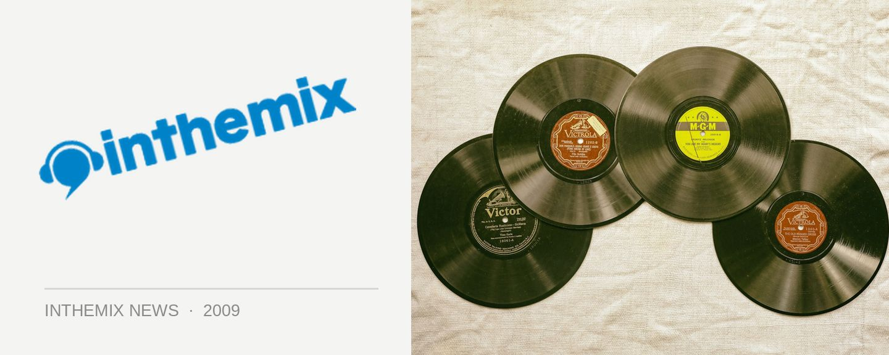

Spank Records presents EnKounter 2009 seminar
One of Sydney’s favourite retail sources for quality underground dance Spank! Records will be putting on a special ‘one night only’ seminar in early July, that’s completely free. Known as EnKounter 2009, it sees the Spank crew teaming with Native Instruments and CMI Australia to provide a special insight into music and technology.
Taking place at the Burdekin Hotel on Oxford Street, the biggest drawcard is the presence of Joshua Fiestra, lead international product specialist from Native Instruments in the US and also the face of the company’s extensive online video tutorial content. He’s a man that boasts endless depths of knowledge on all things to do with music and technology, bit is also able to easily explain them. He’ll be demonstrating Traktor Pro and Komplete as well as the brand new Maschine, and he’ll be fielding questions from those in attendance.
There will also be a special performance from Traktor Pro endorsees The Potbelleez on the evening, and as mentioned it’s absolutely free!
EnKounter 2009 hits the Burdekin from 7pm on Wednesday July 8th, for more info on this completely free event check HERE.